2025 Higher Human Biology - Paper 1 questions
Source: Scottish Qualifications Authority (SQA) / Qualifications Scotland. This is a StemInteract HTML companion, not an official HTML edition. Extracted text is supplied alongside unaltered page images; use the images or original PDF for table layout, diagrams and symbols.
Jump to a question
PDF page 1
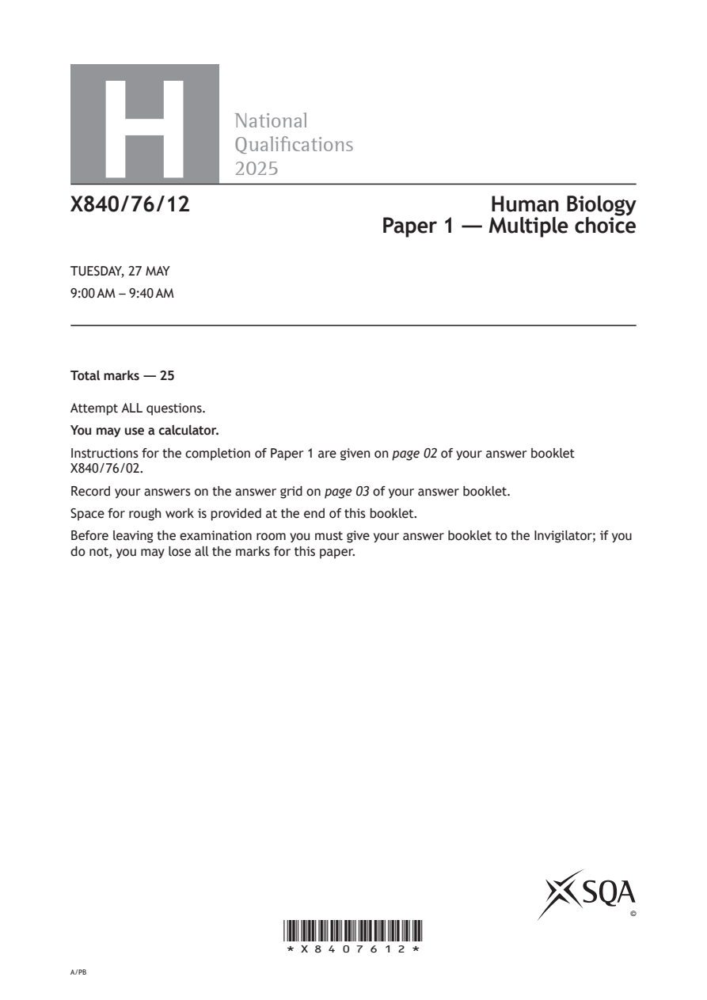
Selectable page text
H
National
Qualications
2025
X840/76/12 Human Biology
Paper 1 — Multiple choice
TUESDAY, 27 MAY
9:00 AM – 9:40 AM
Total marks — 25
Attempt ALL questions.
You may use a calculator.
Instructions for the completion of Paper 1 are given on page 02 of your answer booklet
X840/76/02.
Record your answers on the answer grid on page 03 of your answer booklet.
Space for rough work is provided at the end of this booklet.
Before leaving the examination room you must give your answer booklet to the Invigilator; if you
do not, you may lose all the marks for this paper.
©
*X8407612*
A/PBPDF page 2
Question 1Question 2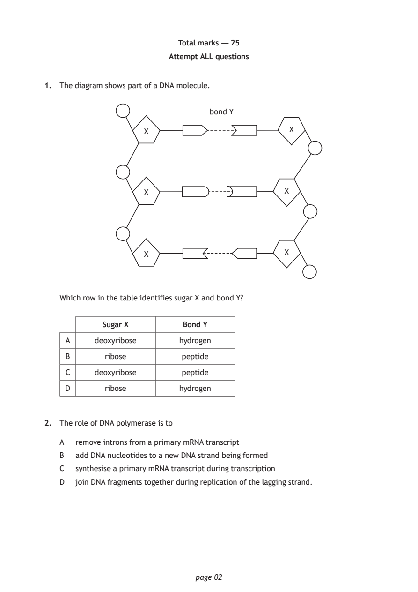
Selectable page text
Total marks — 25
Attempt ALL questions
1. The diagram shows part of a DNA molecule.
bond Y
X X
X X
X X
Which row in the table identifies sugar X and bond Y?
Sugar X Bond Y
A deoxyribose hydrogen
B ribose peptide
C deoxyribose peptide
D ribose hydrogen
2. The role of DNA polymerase is to
A remove introns from a primary mRNA transcript
B add DNA nucleotides to a new DNA strand being formed
C synthesise a primary mRNA transcript during transcription
D join DNA fragments together during replication of the lagging strand.
page 02PDF page 3
Question 3Question 4Question 5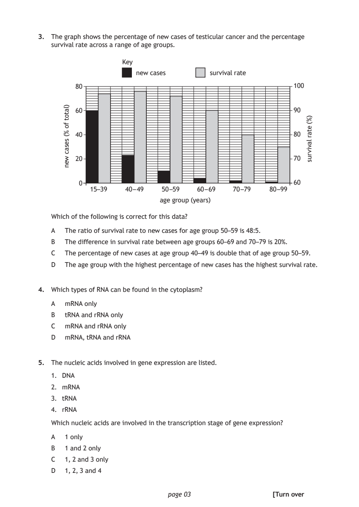
Selectable page text
3. The graph shows the percentage of new cases of testicular cancer and the percentage
survival rate across a range of age groups.
80 100
60 90
40 80
20 70
0 60
15–39 40 – 49 50 –59
age group (years)
page 03
)latot
fo
%(
sesac
wen
)%(
etar
lavivrus
Key
new cases survival rate
60 – 69 70 –79 80 –99
Which of the following is correct for this data?
A The ratio of survival rate to new cases for age group 50–59 is 48:5.
B The difference in survival rate between age groups 60–69 and 70–79 is 20%.
C The percentage of new cases at age group 40–49 is double that of age group 50–59.
D The age group with the highest percentage of new cases has the highest survival rate.
4. Which types of RNA can be found in the cytoplasm?
A mRNA only
B tRNA and rRNA only
C mRNA and rRNA only
D mRNA, tRNA and rRNA
5. The nucleic acids involved in gene expression are listed.
1. DNA
2. mRNA
3. tRNA
4. rRNA
Which nucleic acids are involved in the transcription stage of gene expression?
A 1 only
B 1 and 2 only
C 1, 2 and 3 only
D 1, 2, 3 and 4
[Turn overPDF page 4
Question 6Question 7Question 8Question 9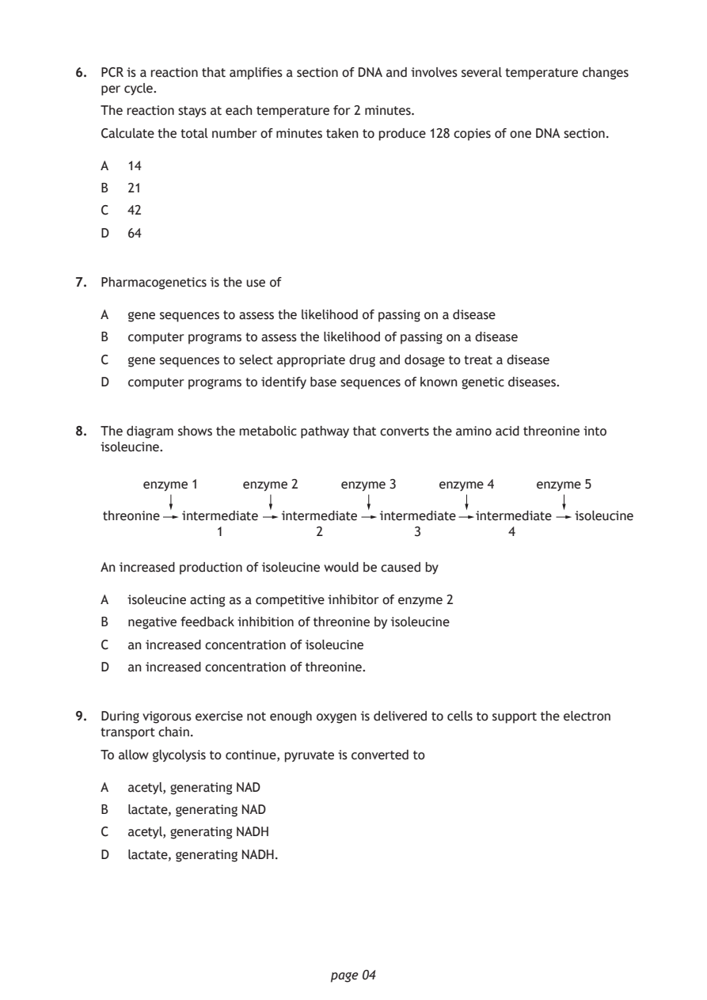
Selectable page text
6. PCR is a reaction that amplifies a section of DNA and involves several temperature changes
per cycle.
The reaction stays at each temperature for 2 minutes.
Calculate the total number of minutes taken to produce 128 copies of one DNA section.
A 14
B 21
C 42
D 64
7. Pharmacogenetics is the use of
A gene sequences to assess the likelihood of passing on a disease
B computer programs to assess the likelihood of passing on a disease
C gene sequences to select appropriate drug and dosage to treat a disease
D computer programs to identify base sequences of known genetic diseases.
8. The diagram shows the metabolic pathway that converts the amino acid threonine into
isoleucine.
enzyme 1 enzyme 2 enzyme 3 enzyme 4 enzyme 5
threonine intermediate intermediate intermediate intermediate isoleucine
1 2 3 4
An increased production of isoleucine would be caused by
A isoleucine acting as a competitive inhibitor of enzyme 2
B negative feedback inhibition of threonine by isoleucine
C an increased concentration of isoleucine
D an increased concentration of threonine.
9. During vigorous exercise not enough oxygen is delivered to cells to support the electron
transport chain.
To allow glycolysis to continue, pyruvate is converted to
A acetyl, generating NAD
B lactate, generating NAD
C acetyl, generating NADH
D lactate, generating NADH.
page 04PDF page 5
Question 10Question 11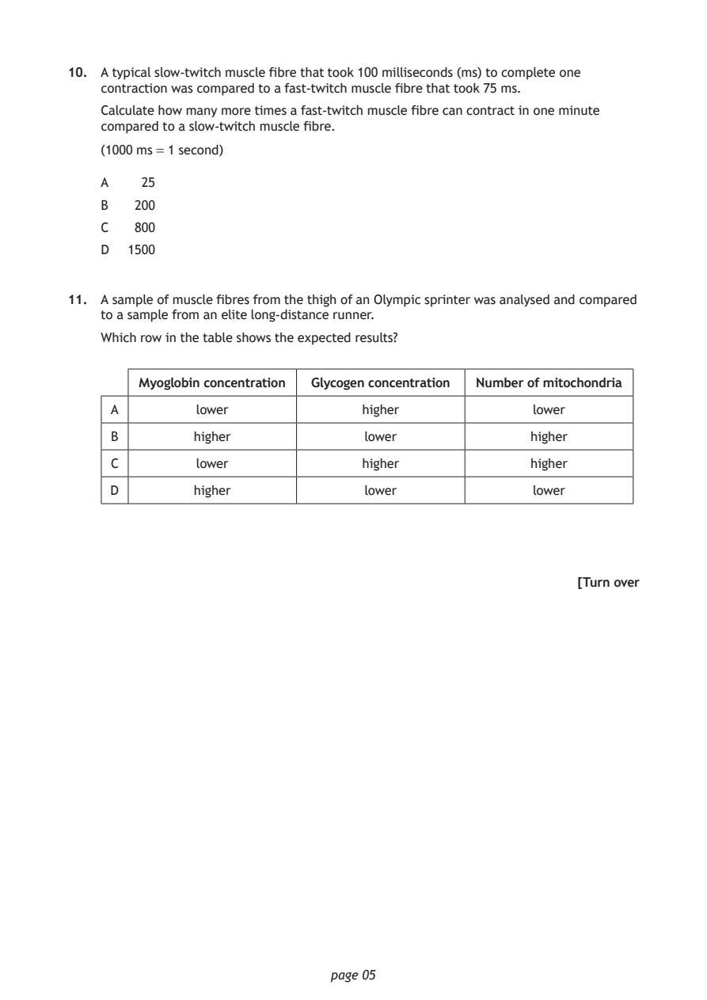
Selectable page text
10. A typical slow‑twitch muscle fibre that took 100 milliseconds (ms) to complete one
contraction was compared to a fast‑twitch muscle fibre that took 75 ms.
Calculate how many more times a fast‑twitch muscle fibre can contract in one minute
compared to a slow‑twitch muscle fibre.
(1000 ms = 1 second)
A 25
B 200
C 800
D 1500
11. A sample of muscle fibres from the thigh of an Olympic sprinter was analysed and compared
to a sample from an elite long‑distance runner.
Which row in the table shows the expected results?
Myoglobin concentration Glycogen concentration Number of mitochondria
A lower higher lower
B higher lower higher
C lower higher higher
D higher lower lower
[Turn over
page 05PDF page 6
Question 12Question 13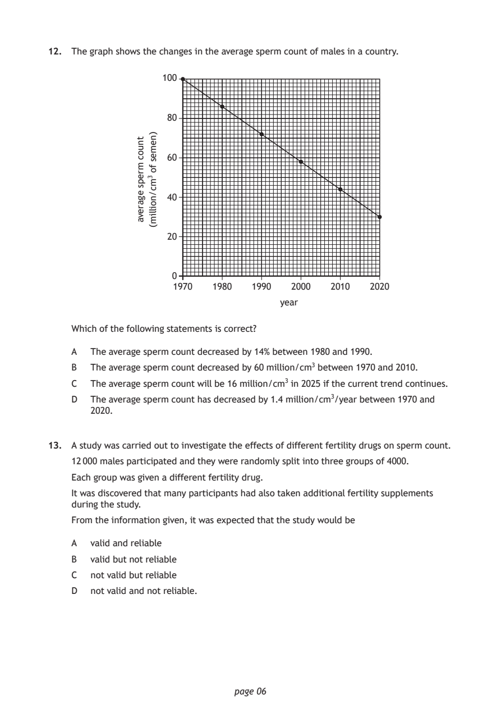
Selectable page text
12. The graph shows the changes in the average sperm count of males in a country.
1970 1980 1990
year
page 06
tnuoc
mreps
egareva
)nemes
fo
3mc/noillim(
100
80
60
40
20
0
2000 2010 2020
Which of the following statements is correct?
A The average sperm count decreased by 14% between 1980 and 1990.
B The average sperm count decreased by 60 million/cm3 between 1970 and 2010.
C The average sperm count will be 16 million/cm3 in 2025 if the current trend continues.
D The average sperm count has decreased by 1.4 million/cm3/year between 1970 and
2020.
13. A study was carried out to investigate the effects of different fertility drugs on sperm count.
12 000 males participated and they were randomly split into three groups of 4000.
Each group was given a different fertility drug.
It was discovered that many participants had also taken additional fertility supplements
during the study.
From the information given, it was expected that the study would be
A valid and reliable
B valid but not reliable
C not valid but reliable
D not valid and not reliable.PDF page 7
Question 14Question 15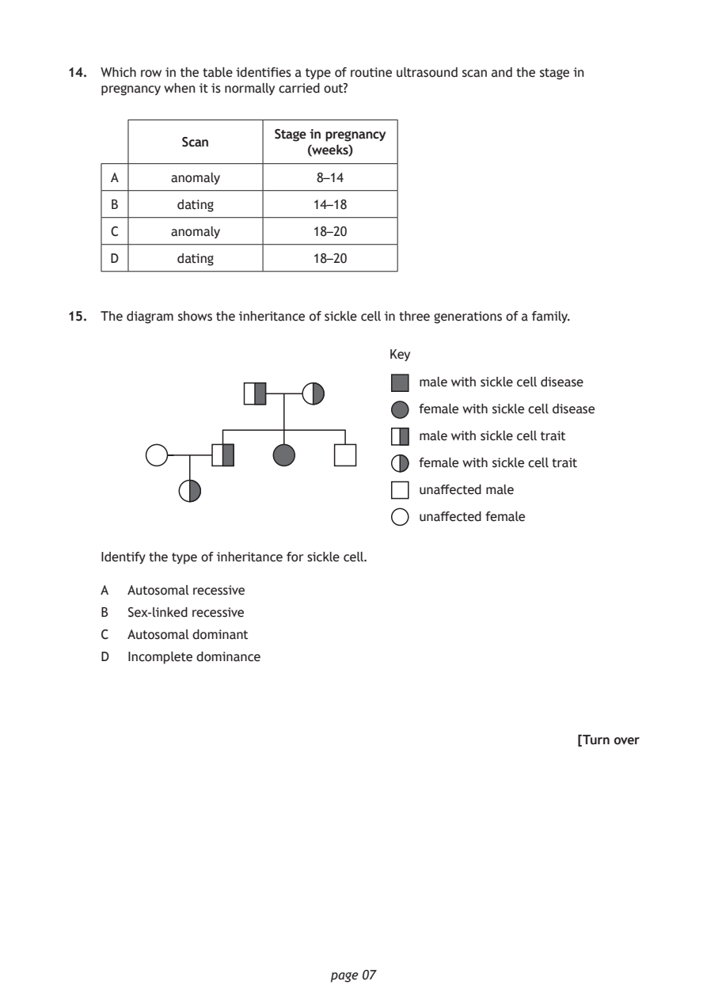
Selectable page text
14. Which row in the table identifies a type of routine ultrasound scan and the stage in
pregnancy when it is normally carried out?
Stage in pregnancy
Scan
(weeks)
A anomaly 8–14
B dating 14–18
C anomaly 18–20
D dating 18–20
15. The diagram shows the inheritance of sickle cell in three generations of a family.
Key
male with sickle cell disease
female with sickle cell disease
male with sickle cell trait
female with sickle cell trait
unaffected male
unaffected female
Identify the type of inheritance for sickle cell.
A Autosomal recessive
B Sex‑linked recessive
C Autosomal dominant
D Incomplete dominance
[Turn over
page 07PDF page 8
Question 16Question 17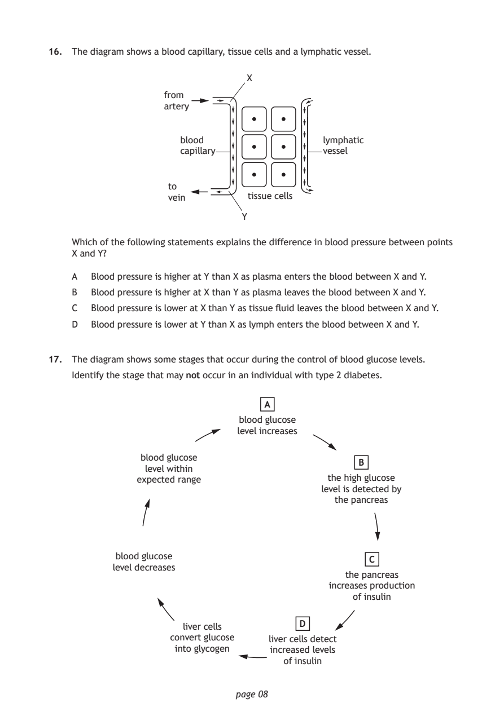
Selectable page text
16. The diagram shows a blood capillary, tissue cells and a lymphatic vessel.
X
from
artery
blood lymphatic
capillary vessel
to
vein tissue cells
Y
Which of the following statements explains the difference in blood pressure between points
X and Y?
A Blood pressure is higher at Y than X as plasma enters the blood between X and Y.
B Blood pressure is higher at X than Y as plasma leaves the blood between X and Y.
C Blood pressure is lower at X than Y as tissue fluid leaves the blood between X and Y.
D Blood pressure is lower at Y than X as lymph enters the blood between X and Y.
17. The diagram shows some stages that occur during the control of blood glucose levels.
Identify the stage that may not occur in an individual with type 2 diabetes.
A
blood glucose
level increases
blood glucose
B
level within
expected range the high glucose
level is detected by
the pancreas
blood glucose
C
level decreases
the pancreas
increases production
of insulin
D
liver cells
convert glucose liver cells detect
into glycogen increased levels
of insulin
page 08PDF page 9
Question 18Question 19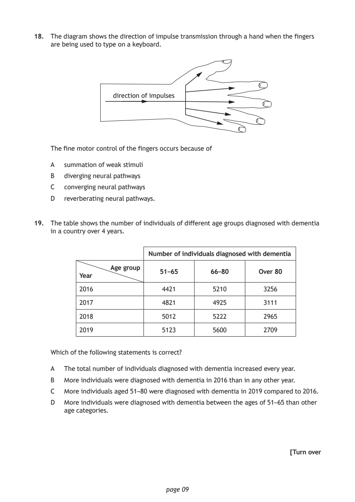
Selectable page text
18. The diagram shows the direction of impulse transmission through a hand when the fingers
are being used to type on a keyboard.
direction of impulses
The fine motor control of the fingers occurs because of
A summation of weak stimuli
B diverging neural pathways
C converging neural pathways
D reverberating neural pathways.
19. The table shows the number of individuals of different age groups diagnosed with dementia
in a country over 4 years.
Number of individuals diagnosed with dementia
Age group
51–65 66–80 Over 80
Year
2016 4421 5210 3256
2017 4821 4925 3111
2018 5012 5222 2965
2019 5123 5600 2709
Which of the following statements is correct?
A The total number of individuals diagnosed with dementia increased every year.
B More individuals were diagnosed with dementia in 2016 than in any other year.
C More individuals aged 51–80 were diagnosed with dementia in 2019 compared to 2016.
D More individuals were diagnosed with dementia between the ages of 51–65 than other
age categories.
[Turn over
page 09PDF page 10
Question 20Question 21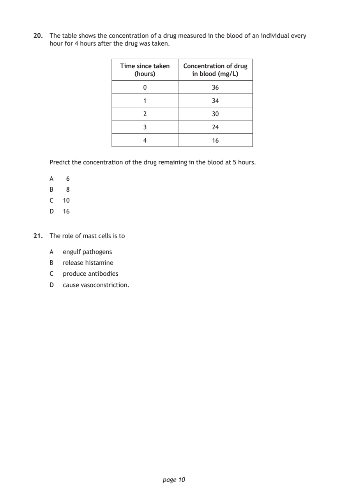
Selectable page text
20. The table shows the concentration of a drug measured in the blood of an individual every
hour for 4 hours after the drug was taken.
Time since taken Concentration of drug
(hours) in blood (mg/L)
0 36
1 34
2 30
3 24
4 16
Predict the concentration of the drug remaining in the blood at 5 hours.
A 6
B 8
C 10
D 16
21. The role of mast cells is to
A engulf pathogens
B release histamine
C produce antibodies
D cause vasoconstriction.
page 10PDF page 11
Question 22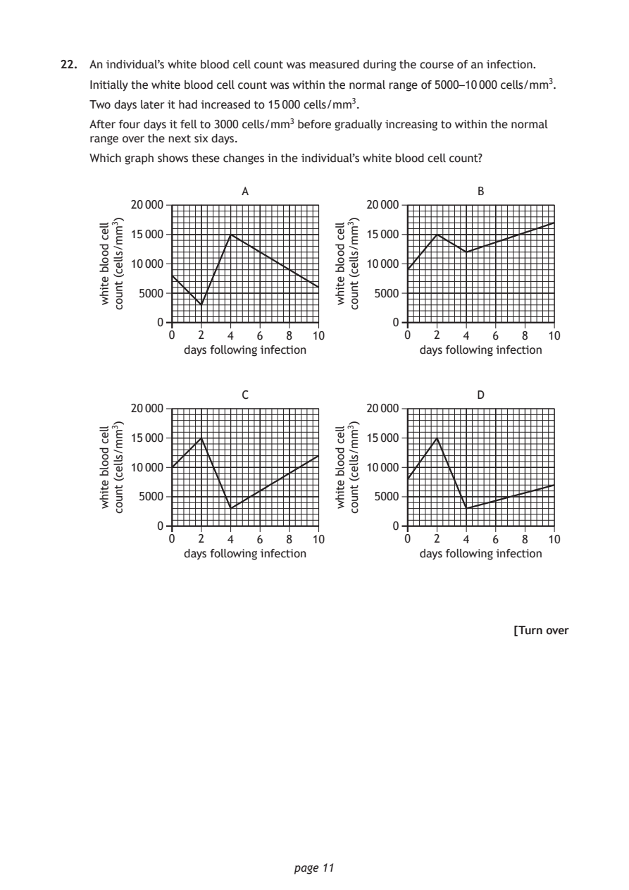
Selectable page text
22. An individual’s white blood cell count was measured during the course of an infection.
Initially the white blood cell count was within the normal range of 5000–10 000 cells/mm3.
Two days later it had increased to 15 000 cells/mm3.
After four days it fell to 3000 cells/mm3 before gradually increasing to within the normal
range over the next six days.
Which graph shows these changes in the individual’s white blood cell count?
A
20 000
15 000
10 000
5000
0
0 2 4 6 8 10
page 11
llec
doolb
etihw
)3mm/sllec(
tnuoc
B
20 000
15 000
10 000
5000
0
0 2 4 6 8 10
days following infection
llec
doolb
etihw
)3mm/sllec(
tnuoc
days following infection
C
20 000
15 000
10 000
5000
0
0 2 4 6 8 10
llec
doolb
etihw
)3mm/sllec(
tnuoc
D
20 000
15 000
10 000
5000
0
0 2 4 6 8 10
days following infection
llec
doolb
etihw
)3mm/sllec(
tnuoc
days following infection
[Turn overPDF page 12
Question 23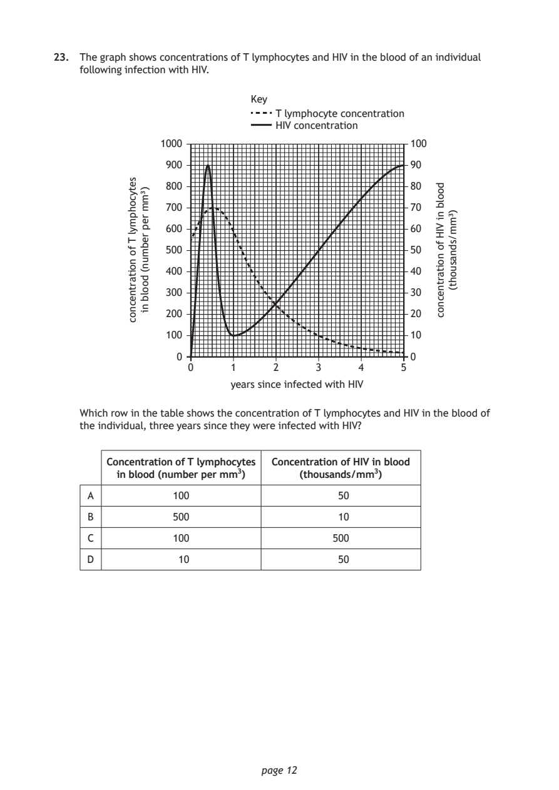
Selectable page text
23. The graph shows concentrations of T lymphocytes and HIV in the blood of an individual
following infection with HIV.
Key
T lymphocyte concentration
HIV concentration
0 1 2
years since infected with HIV
page 12
setycohpmyl
T
fo
noitartnecnoc
)³mm
rep
rebmun(
doolb
ni
1000
900
800
700
600
500
400
300
200
100
0
3 4 5
doolb
ni
VIH
fo
noitartnecnoc
)³mm/sdnasuoht(
100
90
80
70
60
50
40
30
20
10
0
Which row in the table shows the concentration of T lymphocytes and HIV in the blood of
the individual, three years since they were infected with HIV?
Concentration of T lymphocytes Concentration of HIV in blood
in blood (number per mm3) (thousands/mm3)
A 100 50
B 500 10
C 100 500
D 10 50PDF page 13
Question 24Question 25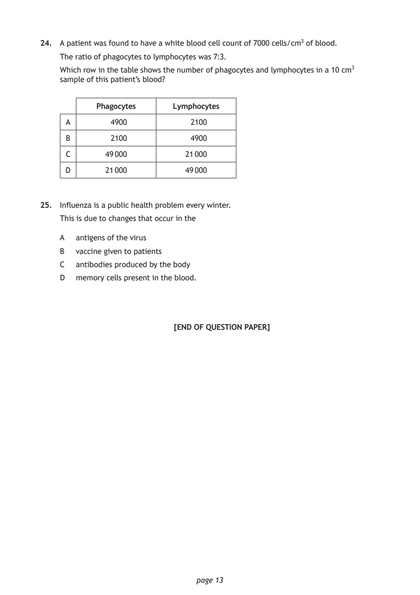
Selectable page text
24. A patient was found to have a white blood cell count of 7000 cells/cm3 of blood.
The ratio of phagocytes to lymphocytes was 7:3.
Which row in the table shows the number of phagocytes and lymphocytes in a 10 cm3
sample of this patient’s blood?
Phagocytes Lymphocytes
A 4900 2100
B 2100 4900
C 49 000 21 000
D 21 000 49 000
25. Influenza is a public health problem every winter.
This is due to changes that occur in the
A antigens of the virus
B vaccine given to patients
C antibodies produced by the body
D memory cells present in the blood.
[END OF QUESTION PAPER]
page 13PDF page 14

Selectable page text
SPACE FOR ROUGH WORK
page 14PDF page 15

Selectable page text
SPACE FOR ROUGH WORK
page 15PDF page 16

Selectable page text
[BLANK PAGE]
DO NOT WRITE ON THIS PAGE
page 16